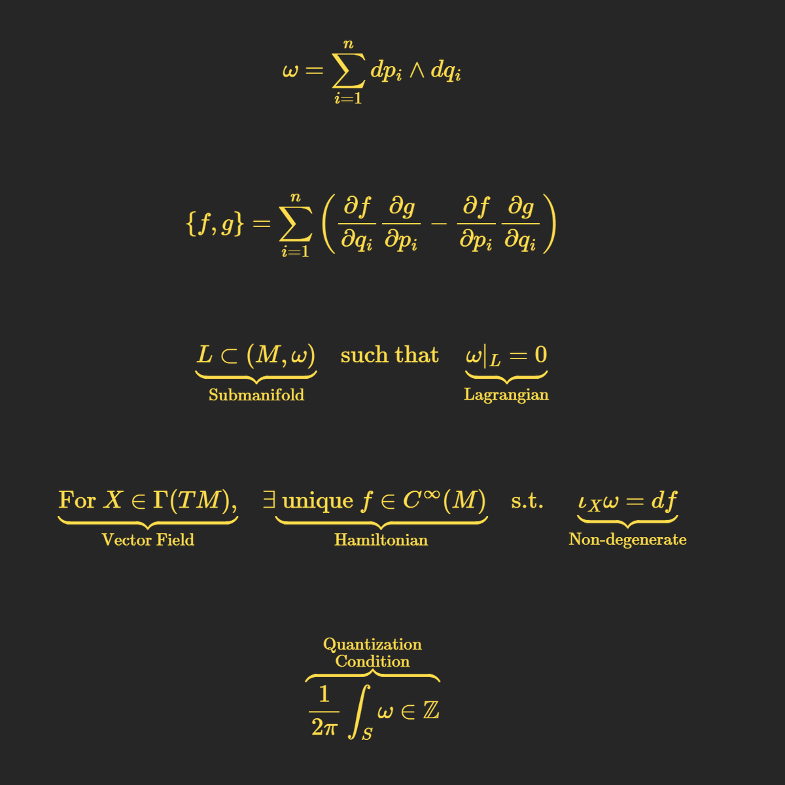

一切都是 Lagrangian 子流形？
忘記粒子，也忘記波動吧。Alan Weinstein 開玩笑地說，宇宙並不是由粒子或波組成，而是由完全不同的東西構建的：Lagrangian 子流形（Lagrangian submanifolds）。那麼，什麼是 Lagrangian 子流形？為什麼值得關心？要理解這個概念，需要先了解什麼是相空間（phase space）。
相空間：不是「狀態空間」
通常，人們提到「相空間」時，其實說的是「狀態空間」（state space），這其實是不正確的。因此，我們先正確定義相空間：相空間是一種抽象空間（注意，不是時空），每個點代表一個粒子的狀態，由位置 \(q\) 和動量 \(p\) 描述。
想像有一個世界叫做「辛幾何世界」(symplectic)，它跟一般的平面或空間不一樣，這個世界裡的每個點都同時代表兩件事情：一個位置（像座標 \(q\)) 和它的變化速度（像動量 \(𝑝\))。所以，這個世界就像是物理課上的「相空間」，用來描述東西在哪裡和怎麼動。
目前，我們只是有了一個「沒有幾何結構的空間」。你可以給它附加某種度量，讓它變成黎曼空間（Riemannian space），或者給它一種不同的結構，讓它變成辛幾何空間（symplectic space）。
我們選擇後者，這樣會給相空間賦予一種特殊的結構：一個稱為辛形式（symplectic form）的二形式，通常記為 \(\omega\)。這個 \(\omega\) 允許我們在相空間中定義「面積」，並且（更重要的是）規定了系統如何隨時間演化。這個規則非常簡潔優雅：
\[ \{f, H\} = \frac{df}{dt} \]
你可以把辛幾何世界想像成一個大的溜冰場，滑冰的每個人都有兩個方向：往前滑（位置）和轉圈圈（動量）。而 Lagrangian 子流形就像是一條特別的滑冰路線： 它很聰明，只需要控制一部分動作（比如只專注於直線滑，或者只專注於轉圈圈）。 而且在這條路線上，滑冰的人之間不會互相干擾，大家的動作都協調得非常好。
辛幾何與哈密頓動力學
- 這裡 \(H\) 是哈密頓量（Hamiltonian，描述系統的能量），而 \(\{f, H\}\) 是泊松括號（Poisson bracket）。泊松括號使用 ( ) 測量函數 \(f\) 沿著由 \(H\) 產生的流的變化。
- 如果 \(\{f, H\} = 0\)，那麼 \(f\) 是一個守恆量。例如，時間 \(t\) 必須滿足 \(\{t, H\} = 1\)。這意味著時間必須以自己為基準線性演化——這是一個非常美妙的條件。
那麼，Lagrangian 子流形是什麼？
Lagrangian 子流形 \(L\) 是相空間中一個特殊的子空間，滿足以下條件：
- 它是辛形式 \(\omega\) 的核（null space），也就是說，\(\omega\) 在這個子空間上完全消失。
- 用簡單的話說，在這個子空間上，\(\omega\) 測量的所有「面積」都是零。
在物理上，Lagrangian 子流形通常對應於某些具有物理意義的狀態集合，例如一個系統的可能狀態。Lagrangian 子流形幫助我們找到一個系統的平衡點或特殊運動方式。比如： 如果你丟一個球，它的路徑可以看成是一條 Lagrangian 子流形；在一些更複雜的世界裡，比如研究量子力學或宇宙的運動，Lagrangian 子流形也能幫助我們理解那些看起來很複雜的規律。
物理中的應用：從約束到量子化
1. 約束系統
大多數情況下，物理系統（甚至現實生活中的系統）都會有某些約束。例如，擺錘的運動受到固定長度的限制。在這種情況下，系統的可能狀態可能位於某個 Lagrangian 子流形上。許多物理約束都可以用這種幾何語言來表達。
2. 量子化
從經典物理到量子物理的過渡（即量子化）通常是一個難以精確定義的過程。但即便如此，量子化的某些條件也可以用 Lagrangian 子流形來描述。特定的「量子化條件」選出了一些特定的 Lagrangian 子流形，對應於允許的量子態。
為什麼 Weinstein 說「一切都是 Lagrangian 子流形」？
Weinstein 的這個說法背後有深刻的意義：它主張現實世界的基本構成物不是粒子，也不是波動，而是位於相空間中的這些特殊子空間——Lagrangian 子流形。這些子流形編碼了系統的動力學、約束，甚至其量子性質。
一些人認為，這表明科學從「物體」的觀點轉向了「關係」的觀點（特別是範疇論研究者）。例如：
- 位置與動量之間的關係，
- 能量與時間之間的關係，
這些關係都可以用辛幾何語言來描述，而這些描述往往集中於 Lagrangian 子流形之中。
補充說明
- 相空間與辛幾何提供了一種統一的視角，能夠連結經典物理與量子物理。
- Lagrangian 子流形則是這種視角中的關鍵元素，幫助我們理解一個系統的所有可能狀態及其物理意義。
這段話最終告訴我們：Lagrangian 子流形不僅僅是一個數學概念，它還是一種新的思考現實的方法。